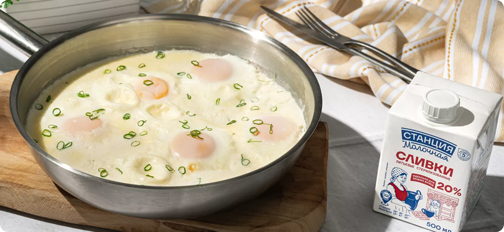
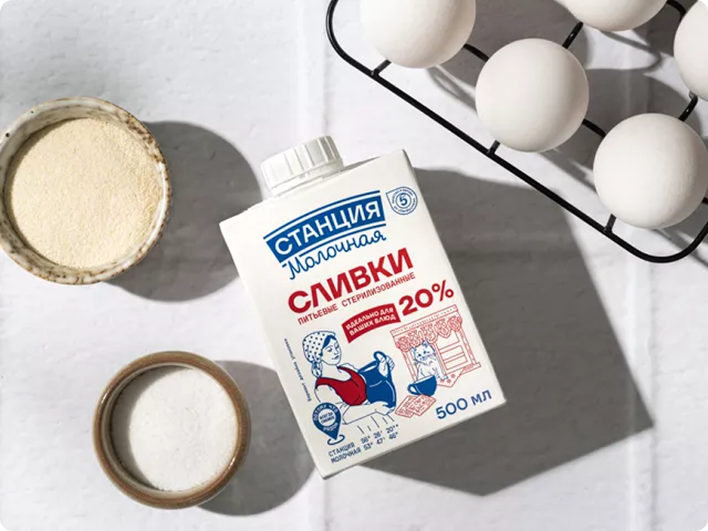
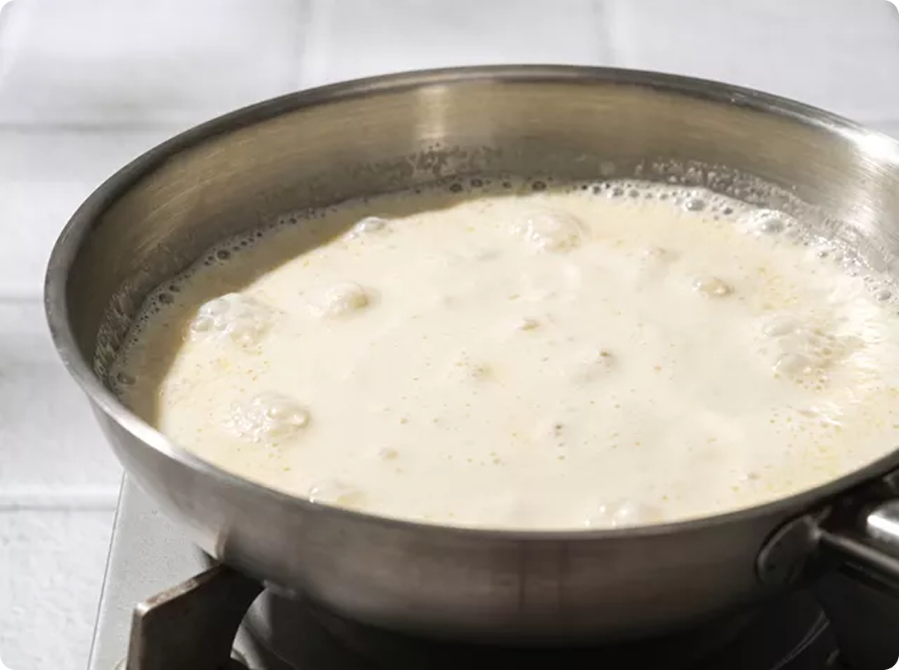
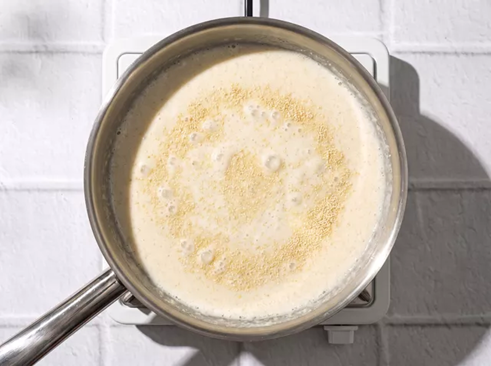
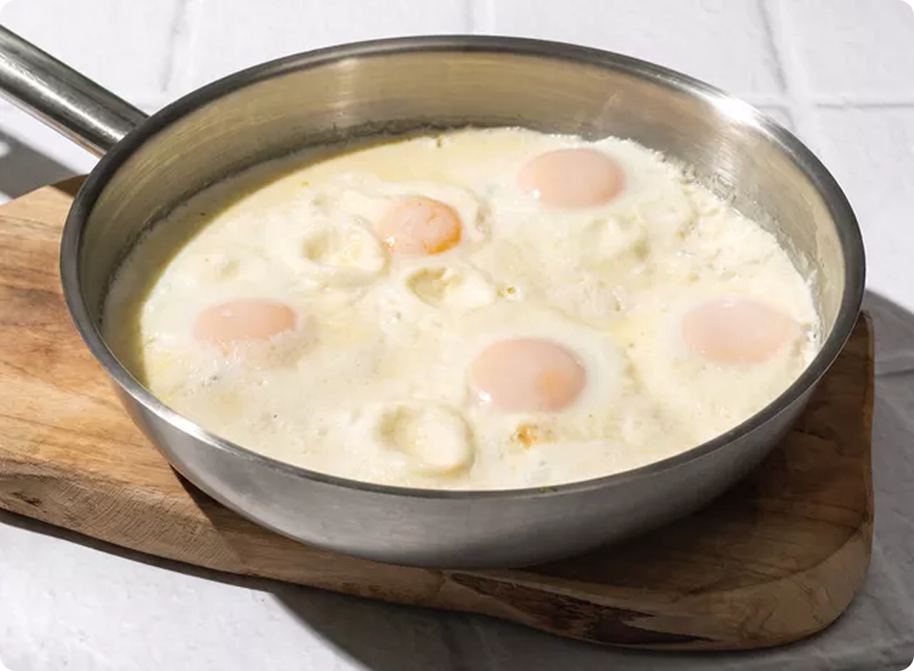
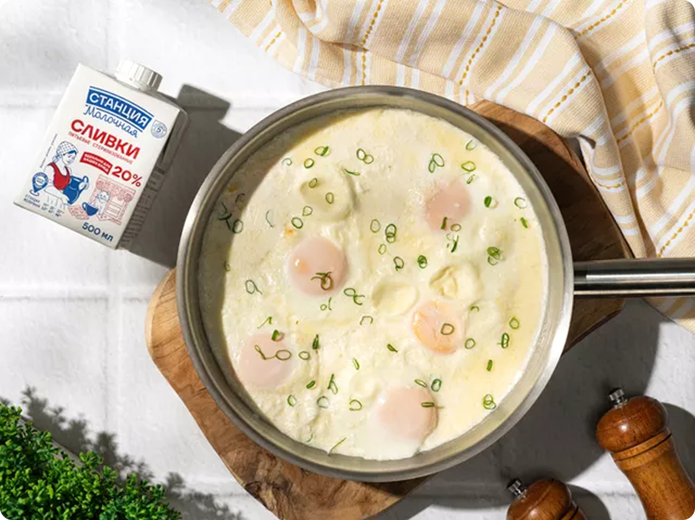

Вкусные рецеаты "Готовим вместе"

Жареные в сливках яйца
Блюдо по мотивам кабардинской кухни. Есть в ней рецепт яичницы, где яйца не обжаривают, а тушат в сметане. Если же заменить сметану жирными сливками, получится не хуже. Яйца также не пригорят, а белки будут особенно нежными. Добавьте в сливки немного манной крупы. Она сделает основу более густой, но никак не повлияет на вкус блюда. Готовая яичница отлично сочетается с рассольным сыром и кинзой.
Для блюда
Пошаговый фоторецепт

Подготовьте все необходимые ингредиенты, а также сковороду диаметром 24–26 см.

Налейте сливки в холодную сковороду и поставьте посуду на средний огонь. Нагревайте сливки 2–3 минуты до появления первых пузырьков, но не допускайте сильного кипения.

Уменьшите огонь до минимального. Всыпьте манную крупу тонкой струйкой, непрерывно перемешивая сливки лопаткой. Готовьте 1–2 минуты. Основа должна слегка загустеть, но не превратиться в кашу.

Поочередно разбейте яйца в сковороду так, чтобы желтки остались целыми. Посолите по вкусу и накройте сковороду крышкой. Готовьте яичницу 5–7 минут. Белки должны побелеть, а желтки — слегка схватиться.

Подайте яичницу прямо в сковороде или переложите на тарелку вместе с небольшим количеством сливочного соуса. Дополните блюдо свежим хлебом и рассольным сыром. Например, брынзой или фетой.